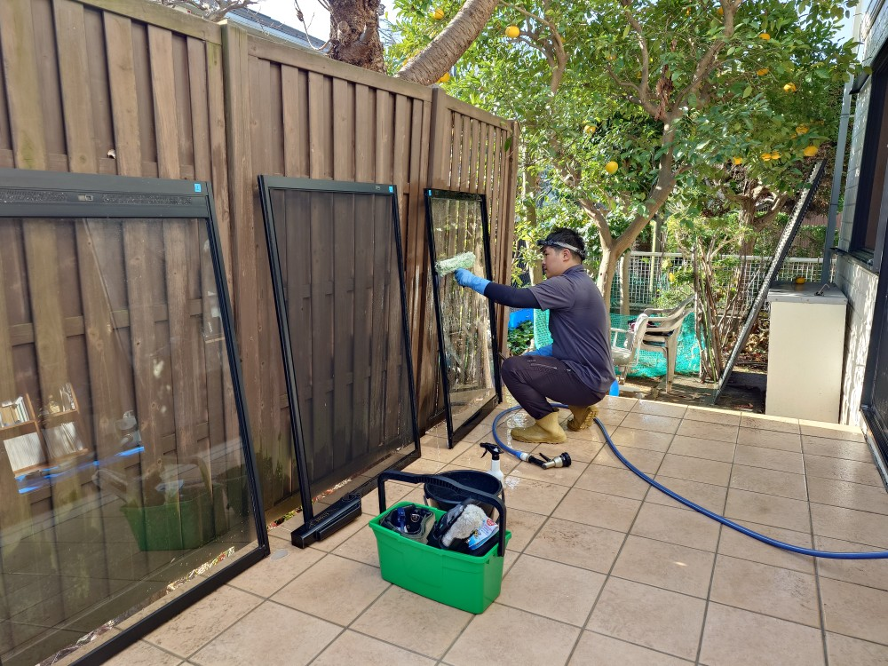
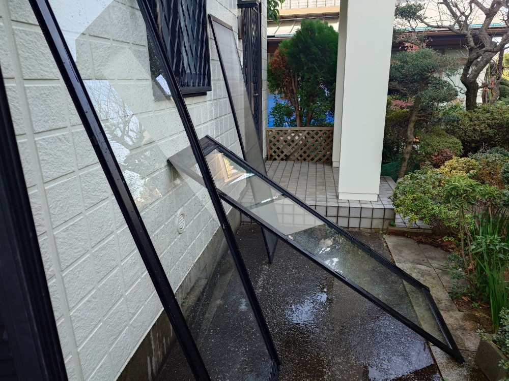
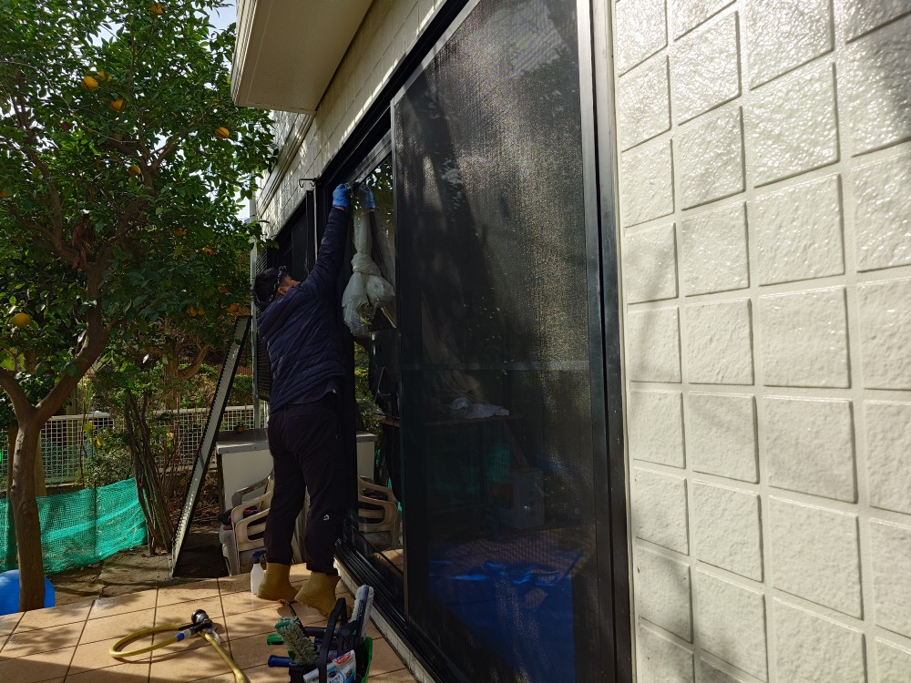
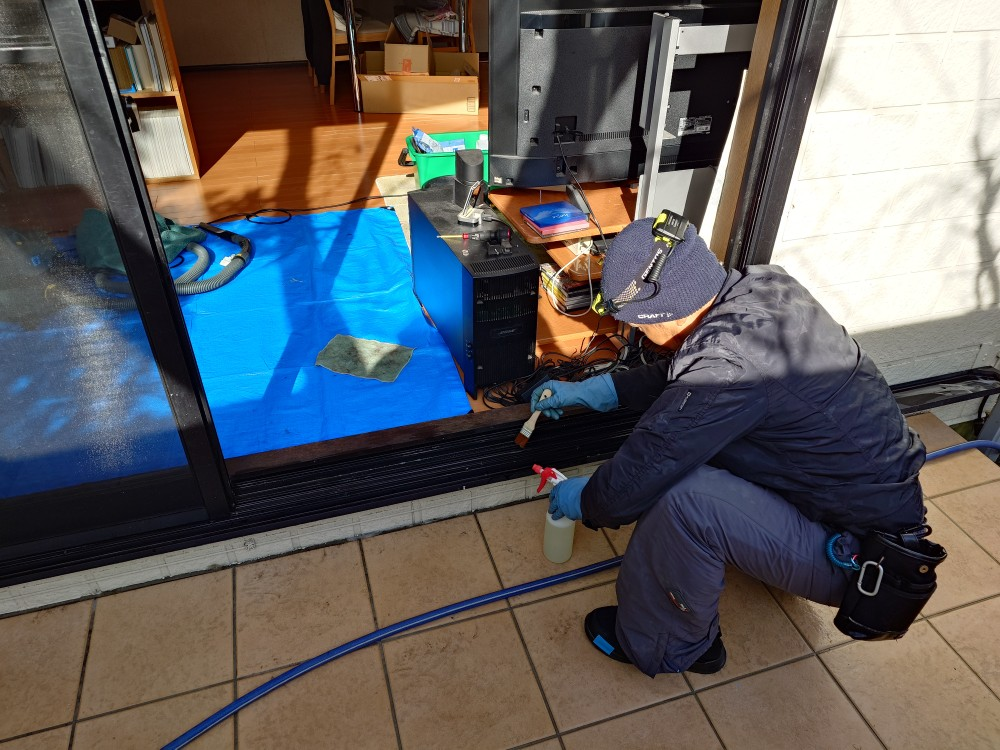
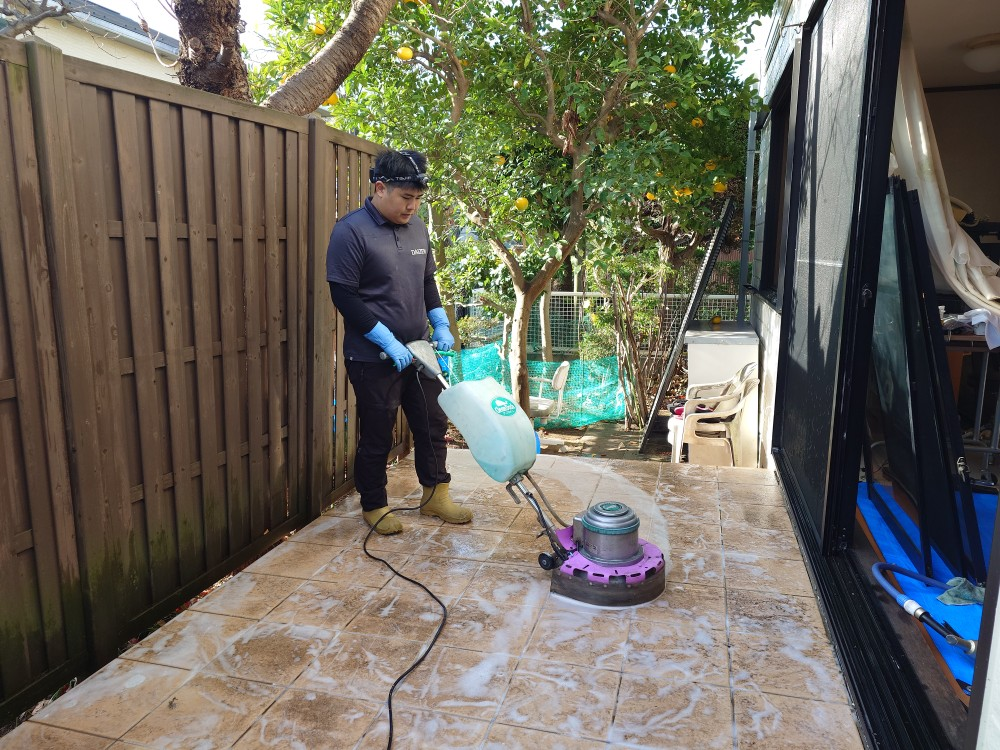
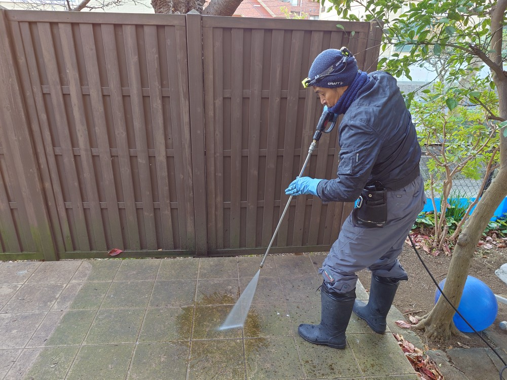
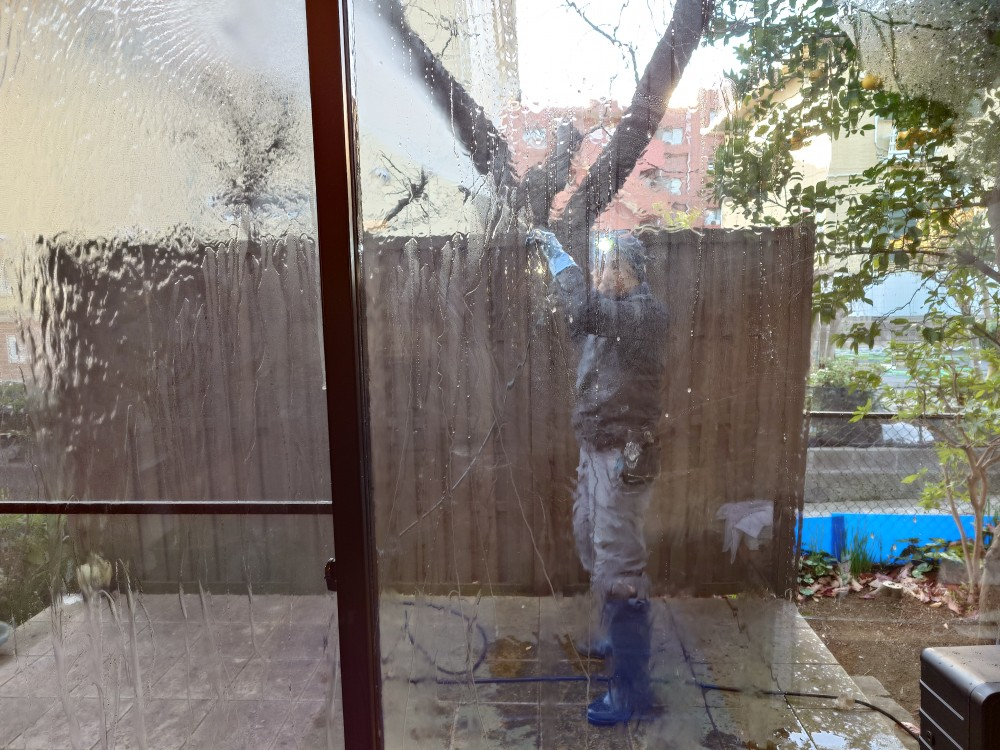
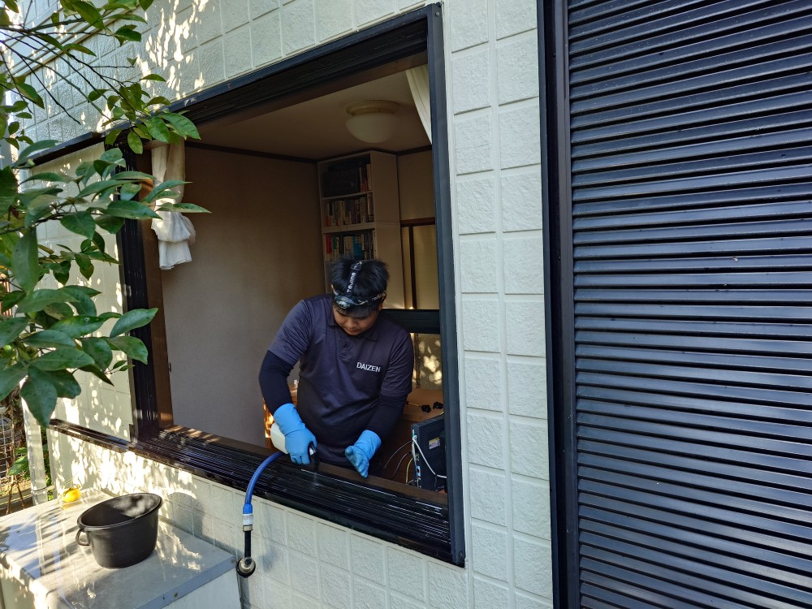

神奈川県横浜市港南のKさんご自宅の窓・サッシ・網戸・雨戸クリーニングとテラス苔取り高圧洗浄クリーニングを実施しました!

神奈川県横浜市港南のKさんご自宅の年末クリーニングを実施しました！今回のクリーニングターゲットは、窓サッシ網戸と雨戸、そしてテラスの苔取り高圧洗浄クリーニングです！DAIZENプロフェッショナルメソッドを駆使して、見る見るテラスも窓もサッシも網戸も雨戸も全部綺麗になりました！ぜひDAIZENのプロフェッショナルメソッドをお試し下さい、宜しくお願いいたします！






